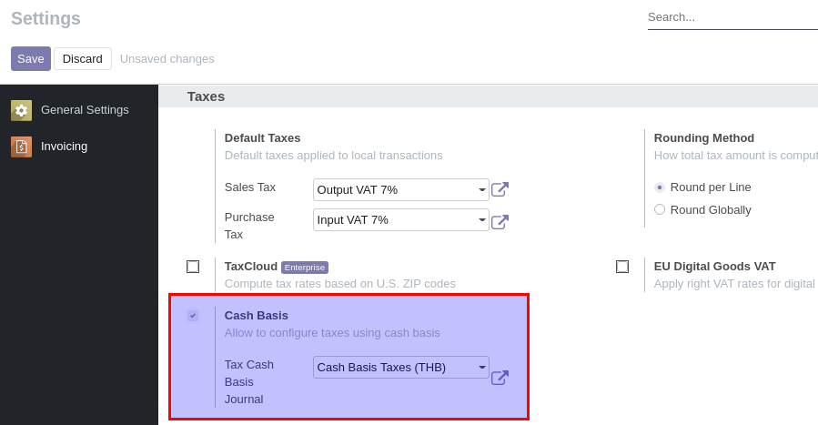
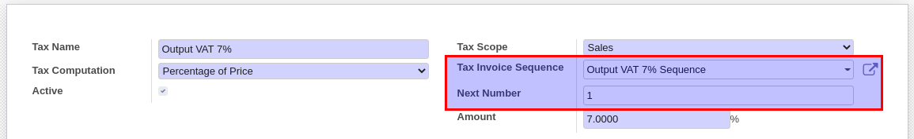

Account: Thai Tax Invoice¶
ภาษีมูลค่าเพิ่ม VAT
ภาพรวม¶
ภาษีมูลค่าเพิ่ม (Value Added Tax) หรือ VAT เป็นการเก็บภาษีจากการขายสินค้า หรือการให้บริการในแต่ละขั้นตอนการผลิต และจำหน่ายสินค้าหรือบริการ ทั้งที่ผลิต ภายในประเทศและนำเข้าจากต่างประเทศ…
เมื่อมีการซื้อขายสินค้า จุดที่เกิด VAT ได้มี 2 ที่ คือ ที่ Invoice และที่ Payment ขึ้นอยู่กับประเภทสินค้า
Product :: สำหรับสินค้าที่ตรวจรับนับชิ้นได้ VAT เกิดขึ้นที่ Invoice (ตอนออกเอกสาร Invoice ให้ผู้รับสินค้า)
Service :: สำหรับสินค้าประเภทบริการ VAT เกิดขึ้นที่ Payment (เมื่อบริการเสร็จ มีการจ่ายเงินและออกเอกสาร Payment)
ธุรกรรมดังกล่าวที่เกิดขึ้น ระบบจะนำไปบันทึกบัญชี (Journal Entries) ตามการทำงานปกติของ Odoo ส่วนโมดูลเสริมจะช่วยบันทึกรายละเอียดของ Tax Invoice ไว้อีกตารางหนึ่งเพื่อความสะดวกในการสร้างรายงานภาษีซื้อและขายสำหรับส่งกรมสรรพากรต่อไป
ในธุรกรรมหนึ่งๆ เลขที่เอกสารที่ใช้ออกรายงานภาษี (Tax Invoice Number) จะใช้เลขที่เอกสารจากผู้ขายเป็นเลขที่อ้างอิงเสมอ หากโยงเรื่องนี้กับระบบ ERP ซึ่งการทำงานจะมีเอกสารทั้งด้านขาย (Customer Invoice, Customer Payment) และด้านซื้อ (Vendor Bill, Vendor Payment) เลขที่อ้างอิง (Tax Invoice Number) ที่บันทึกในระบบจะเป็นแบบนี้
เราเป็นผู้ขาย :: Tax Invoice Number ออกจากระบบเรา คือ Customer Invoice (ขายสินค้า) หรือ Customer Payment (ขายบริการ)
เราเป็นผู้ซื้อ :: Tax Invoice Number จะได้มาจากผู้ขาย (ผู้ขายจะให้อ้างเลขที่ใบกำกับภาษีใดมาเราก็จะใช้ตามนั้น) โดยจะได้รับมาตอนสร้างรายการ Vendor Bill (ซื้อสินค้า) หรือ Vendor Payment (ซื้อบริการ)
ทั้งหมดนี้เป็นหลักการทั่วๆไปของไทย ส่วนถัดไปจะแสดงให้เห็นว่าใน Odoo ทำงานอย่างไร
โมดูลที่ใช้¶
Odoo 13.0
account
l10n_th_tax_invoice โมดูลหลักในการบันทึกภาษีเข้ารายการ Tax Invoice เพื่อการออกรายงานภาษี
การตั้งค่า¶
ตั้งค่าสิทธิ์การใช้งานสำหรับระบบบัญชี
ตั้งค่าระบบเพื่อให้รองรับ VAT ที่เกิดขึ้นที่ Payment (Undue VAT)
ตั้งค่า VAT / Undue VAT ทั่งฝั่งซื้อและขาย
Note
- สร้าง database ด้วย
Odoo 13.0
Country = Thailand เพื่อใช้งาน Chart of Account เบื้องต้น
Language = English, Demo = False
1. ตั้งค่าสิทธิ์การใช้งานสำหรับระบบบัญชี¶
เพื่อให้ผู้ใช้งานสามารถเข้าไปตั้งค่าได้ User ต้องมีสิทธ์ดังนี้
สำหรับ CE ให้เซตสิทธิ์ Show Full Accounting Feature
สำหรับ EE ให้เซตสิทธิ์ Accounting = Advisor
2. ตั้งค่าระบบเพื่อให้รองรับ VAT ที่เกิดขึ้นที่ Payment (Undue VAT)¶
Note
ใน Odoo เรียกการบันทึก Tax ตอน Payment ว่า Cash Basis
3. ตั้งค่า VAT / Undue VAT ทั้งฝั่งซื้อและขาย¶
Output VAT 7%
Undue Output VAT 7% (ภาษียังไม่ถึงกำหนดชำระ)
Input VAT 7%
Undue Input VAT 7% (ภาษียังไม่ถึงกำหนดชำระ)
Note
- Undue VAT ตั้งค่าเหมือนกับ VAT ทุกประการ (ใช้การ Copy มาได้) ยกเว้น
Tax Due = Based On Payment
Cash Basis Transition Account = Undue VAT (Input/Output)
การใช้งาน¶
กระบวนการขาย
การบวนการซื้อ
1. กระบวนการขาย¶
- กรณี Output VAT, Tax Invoice จะเกิดขึ้นที่ Invoice
สร้างเอกสาร Customer Invoice เลือกรายการสินค้าและเลือก Output VAT 7%
เนื่องจากการบันทึบัญชี Output VAT เกิดขึ้นที่ Invoice ระบบจะสร้าง Tax Invoice โดยใช้เลขที่ Customer Invoice จากระบบของเราเป็นเลขที่ Tax Invoice สำหรับออกรายงานภาษี

- กรณี Undue Output VAT, Tax Invoice จะเกิดขึ้นที่ Payment
สร้างเอกสาร Customer Invoice เลือกรายการสินค้าและเลือก Undue Output VAT 7% และทำการจ่ายเงินตามปกติ
ที่ Invoice จะบันทึก Undue Output VAT (ภาษียังไม่ถึงกำหนด) และล้างเข้าบันทึกบัญชี Output VAT ตอนจ่ายเงิน
เนื่องจากการบันทึกบัญชี Output VAT เกิดขึ้นที่ Payment ระบบจะสร้าง Tax Invoice ที่ Customer Payment
Note
โดยการตั้งค่าเริ่มต้น ระบบจะใช้เลขที่ตามหน้าเอกสารซึ่งอาจเป็น Customer Invoice หรือ Customer Payment แต่ถ้าธุรกิจมีการขายทั้งสินค้า (VAT) และบริการ (Undue VAT) จะทำให้การรันเลขที่ Tax Invoice ไม่ต่อเนื่อง ในกรณีนี้เราสามารถสร้าง Sequence ใหม่โดยสัมพันธ์กับ Sales VAT ได้ โดยระบบจะใช้เลขที่นี้ในการรันเลขที่ Tax Invoice แทนโดยไม่สนใจว่า VAT เกิดขึ้นที่ไหน
2. การบวนการซื้อ¶
- กรณี Input VAT, Tax Invoice จะเกิดขึ้นที่ Invoice
สร้างเอกสาร Vendor Bill เลือกรายการสินค้าและเลือก Input VAT 7%
เนื่องจากการบันทึบัญชี Input VAT เกิดขึ้นที่ Invoice ระบบจะสร้าง Tax Invoice ไว้แต่ไม่สามารถ Post ได้จนกว่าผู้ใช้จะกรอกเลขที่ Tax Invoice ที่ได้รับมาจากผู้ขาย ซึ่งจะเป็นเลขที่ใช้ในการออกรายงานภาษี
- กรณี Undue Input VAT, Tax Invoice จะเกิดขึ้นที่ Payment
สร้างเอกสาร Vendor Bill เลือกรายการสินค้า และเลือก Undue Input VAT 7% และทำการจ่ายเงินตามปกติ
ที่ Invoice จะบันทึก Undue Input VAT (ภาษียังไม่ถึงกำหนด) และล้างเข้าบันทึกบัญชี Input VAT ตอนจ่ายเงิน
เนื่องจากการบันทึกบัญชี Input VAT เกิดขึ้นที่ Payment ระบบจะสร้าง Tax Invoice ที่ Vendor Payment
Note
กรณีของ Input VAT เลขที่ Tax Invoice จะได้รับจากผู้ขายเสมอ